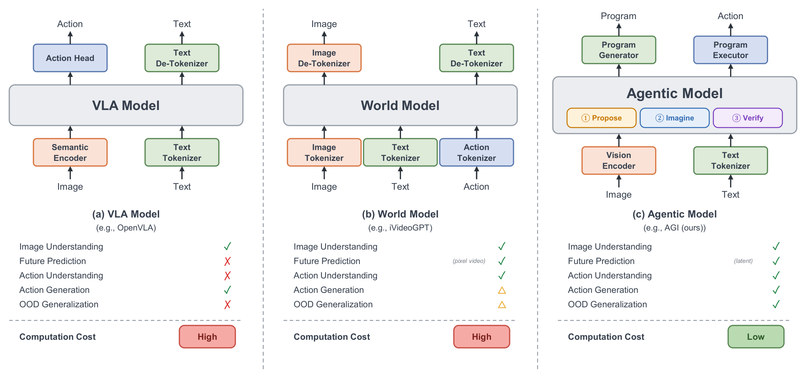

AGI
Agentic Intelligence and Latent Lookahead for Robust Manipulation
Names, affiliations and code links are withheld during anonymous review.

Four tabletop tasks on a Piper arm
20 consecutive rollouts per task, 80 in total: 83.8% success (67/80), including sequential two-object placement.
6-DoF Piper (WEGO) arm with a parallel-jaw gripper, a wrist-mounted and a third-person camera, inference on an NVIDIA RTX 3090 GPU.

LIBERO-PRO
On LIBERO-PRO Spatial, OpenVLA and π0 score 0.00 on both the Position and Task axes, while AGI reaches 0.50 / 0.49.

The gain is not uniform: Spatial-Semantic success remains 0.73.
Meta-World v3 & LIBERO-X
Meta-World v3 success (%), 50 tasks
| Method | Venue | Params | Easy | Mid | Hard | V.Hard | Avg. |
|---|---|---|---|---|---|---|---|
| HarmonyDream | ICML'24 | 77M | 81.0 | 91.0 | 72.5 | 44.5 | 72.3 |
| Diffusion Policy | IJRR'25 | 80M | 83.6 | 31.1 | 9.0 | 26.6 | 37.6 |
| TinyVLA | ICRA'25 | 1.5B | 77.6 | 21.5 | 11.4 | 15.8 | 31.6 |
| Mamba Policy | IROS'25 | – | 95.4 | 92.2 | 48.3 | 71.2 | 76.8 |
| π0 | RSS'25 | 3.3B | 71.8 | 48.2 | 41.7 | 30.0 | 47.9 |
| AGI | – | 277M | 98.3 | 95.7 | 91.3 | 90.6 | 94.0 |
LIBERO-X accuracy (%), cumulative severity
| Method | Venue | Params | L1 | L2 | L3 | L4 | L5 | Avg. |
|---|---|---|---|---|---|---|---|---|
| GR00T N1.5 | arXiv'25 | 3B | 43.3 | 32.9 | 18.7 | 13.3 | 9.7 | 23.6 |
| OpenVLA-OFT | RSS'25 | 7B | 29.0 | 17.6 | 8.8 | 6.4 | 4.2 | 13.2 |
| π0.5 | CoRL'25 | 3.5B | 65.2 | 53.2 | 36.0 | 24.1 | 18.0 | 39.3 |
| π0 | RSS'25 | 3.3B | 29.4 | 21.9 | 11.0 | 7.6 | 5.1 | 15.0 |
| X-VLA | ICLR'26 | 1B | 30.1 | 22.6 | 10.3 | 6.0 | 4.1 | 14.6 |
| AGI | – | 277M | 73.6 | 62.9 | 52.4 | 41.7 | 33.8 | 52.9 |
Bold: best, underline: second best. These cross-paper comparisons show breadth, not controlled superiority or zero-shot transfer.


What each part is worth
LIBERO-PRO Spatial, policy level. The program boundary with bounded replanning and latent ranking each add 0.060 to mean Position/Task success; these increments are descriptive because the variants visit different states.

Component and interface ablations LIBERO-PRO Spatial
| Variant | Tp/H | Pair-AUC ↑ | NMSE 3/8 ↓ | AUROC enc. ↑ | AUROC pred. ↑ | Norm. AP pred. ↑ | η |
|---|---|---|---|---|---|---|---|
| Full system | 3/8 | 0.70 | 0.35/0.60 | 0.78 | 0.72 | 1.40 | 0.40 |
| No horizon code | 3/8 | 0.70 | 0.42/0.80 | 0.78 | 0.64 | 1.21 | 0.25 |
| Terminal head only | 3/8 | 0.70 | 0.35/0.60 | 0.75 | 0.68 | 1.26 | 0.25 |
| Step head only | 3/8 | 0.70 | 0.35/0.60 | 0.76 | 0.70 | 1.33 | 0.30 |
| Paired bridge alignment | 3/8 | 0.78 | 0.33/0.57 | 0.78 | 0.73 | 1.42 | 0.41 |
| Matched horizon | 8/8 | – | 0.36/0.48 | 0.78 | 0.74 | 1.44 | 0.42 |
| Mixed-verifier training | 3/8 | 0.70 | 0.35/0.60 | 0.76 | 0.75 | 1.46 | 0.42 |
The last three rows correct the train–test interface and have no matched end-to-end reruns.
Local foresight is light; the proposer is the bottleneck
The local verification stack takes 15.46 ms (64.7 Hz) for K=3 candidates and H=8 steps. The 10.006 s proposer call limits the synchronous path to 0.10 decisions per second.
Local verification stack mean ms per cycle
- Encoder Eθ5.95
- Bridge φ4.38
- Dprog, batched K=34.28
- Verifier R0.85
- Local verification stack15.46
Planning cost K=3, H=8, RTX PRO 6000, FP16
| Stage | Mean ms | Rate (Hz) | Share | Params (M) |
|---|---|---|---|---|
| Local verification stack | 15.46 | 64.7 | 0.154% | 198.3 |
| Proposer (VLM, RTT) | 10006.00 | 0.100 | 99.846% | remote |
| Decision path (sync.) | 10021.46 | 0.100 | 100% | – |
Local means use 200 cycles after 20 warmups; proposer round trip uses 60 requests.
A decision record you can read

BibTeX
@inproceedings{anonymous2027agentic,
title = {AGI: Agentic Intelligence and Latent Lookahead for Robust Manipulation},
author = {Anonymous},
booktitle = {IEEE International Conference on Robotics and Automation (ICRA)},
year = {2027},
note = {Under review}
}